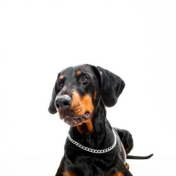

Doberman Pinscher

El doberman, o doberman pinscher, es un perro elegante, musculoso y poderoso.
Con un cuerpo compacto y poderoso, el dobermann ha cautivado la imaginación de
la gente por muchos años, aunque hoy en día no es una raza tan apreciada como
lo fuera en décadas pasadas.
| Origen: |
Europa-Alemania |
| Altura: |
70-80cm |
| Peso: |
25-45kg |
Ver